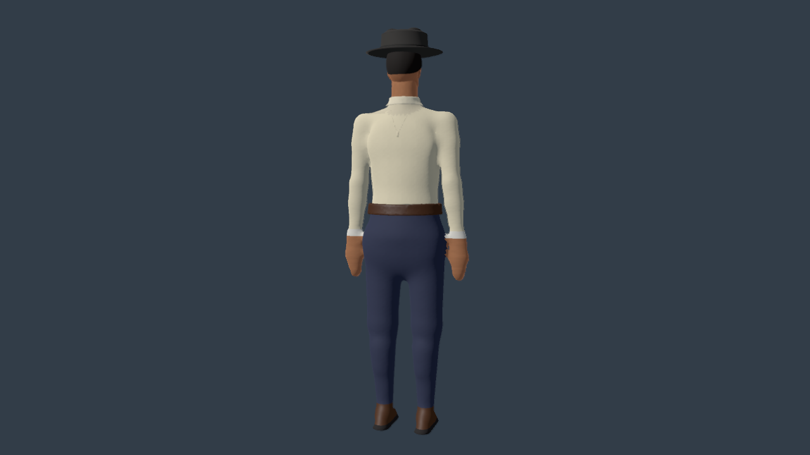
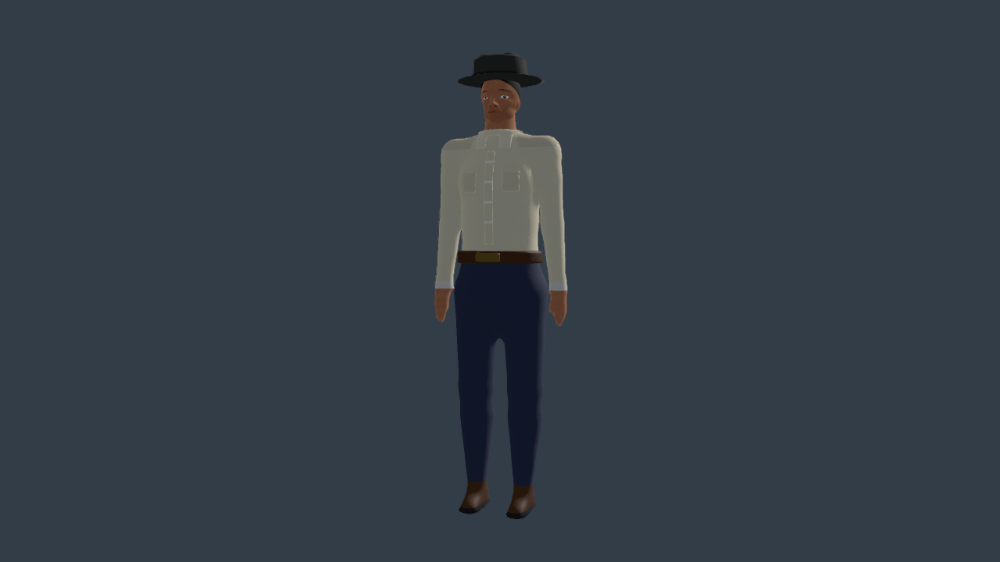
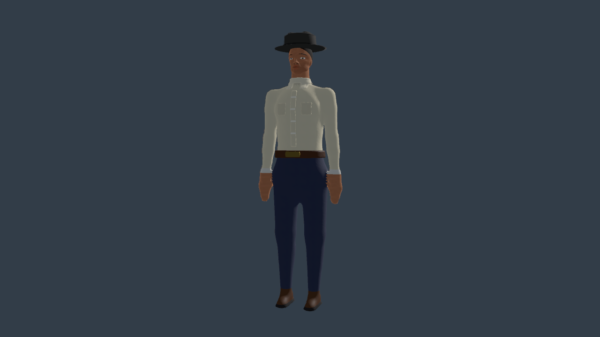
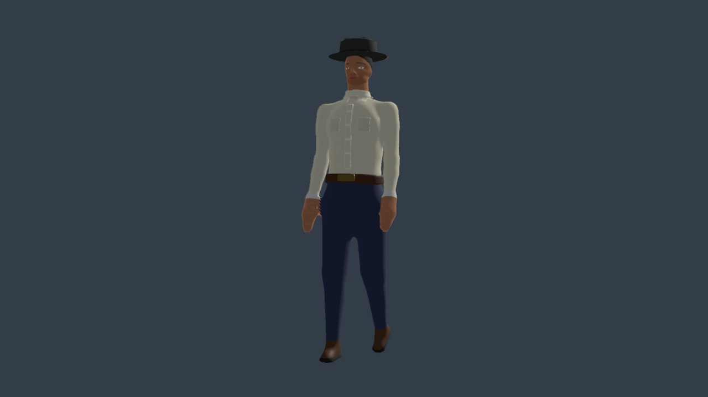
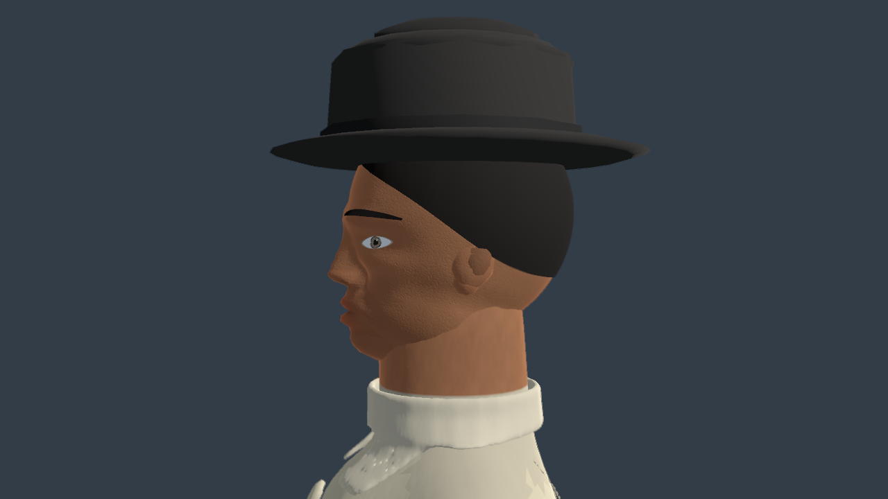
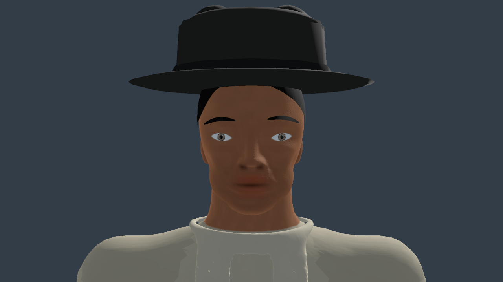
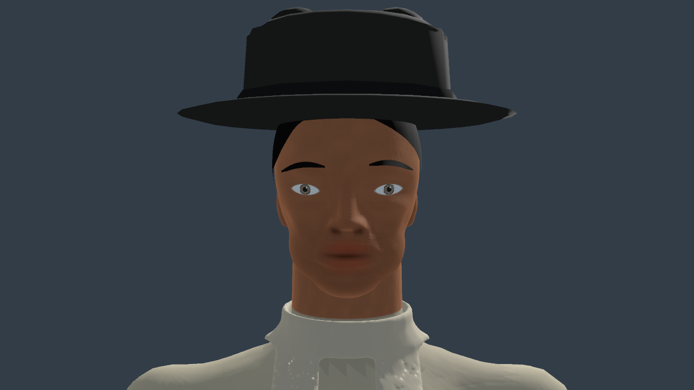
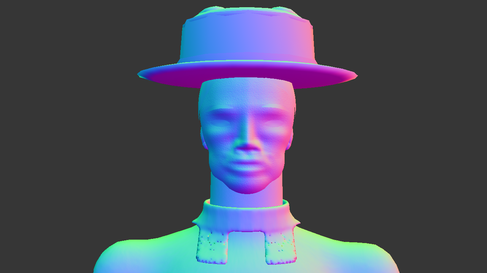

Back


Same character, camera and lighting (tools/character_review.gd). "Before" is the tree Codex left on 2026-09-06 13:50 (its face pass, cache v11). "After" is body pass two (cache v13): trapezius as a slope per side, torso capsule top squashed from 1.538 to 1.488, deltoid centre 1.452→1.425, shoulder bar and collar ring removed, bicep/elbow/forearm/wrist taper, elbow point, hands 10→17 cm with a forward thumb, waist r 118 against a 140 ribcage, two glutes, slimmer shin with calf belly and patella.









Camera-facing surfaces are blue; the D-051 winding fix is in this build.

bake-audit.log: six buckets watertight, winding 99.9–100%. garment-clearance.log: flat trims 4 of 52,258 vertices over 5 mm (belt 2, apron 2), 0 penetrating.